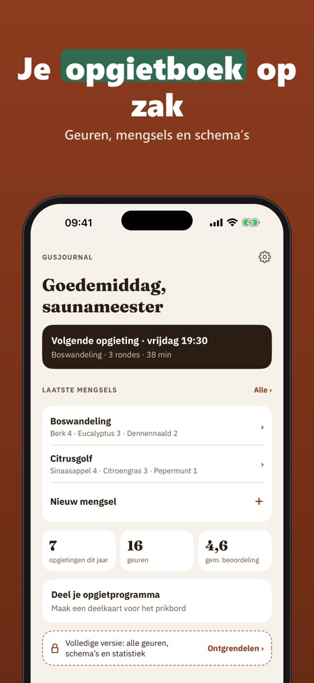
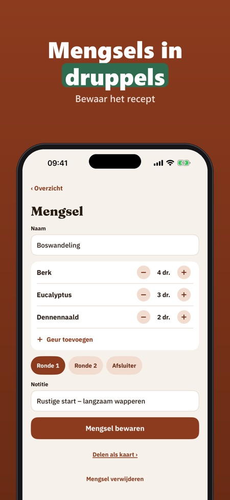
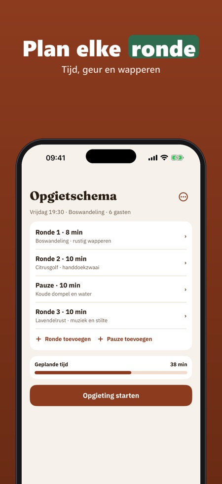

Geuren, mengsels en planning. Het saunaseizoen is begonnen: 21 geuren met notities, eigen mengsels, rondes plannen met een timer en elke opgieting bijhouden – ook zonder internet.



Gusjournal is het notitieboek voor iedereen die saunaopgietingen doet: geuren, mengsels, schema’s en logboek op één plek.
Het logboek, 10 geuren en 3 mengsels kun je zonder aankoop gebruiken. De volledige versie is een eenmalige aankoop voor alle geuren, schema’s met timer, statistiek en deelkaarten. Geen abonnement.
Gusjournal is een notitieboek en geeft geen gezondheidsadvies. Volg altijd de aanwijzingen van de fabrikant voor etherische oliën.